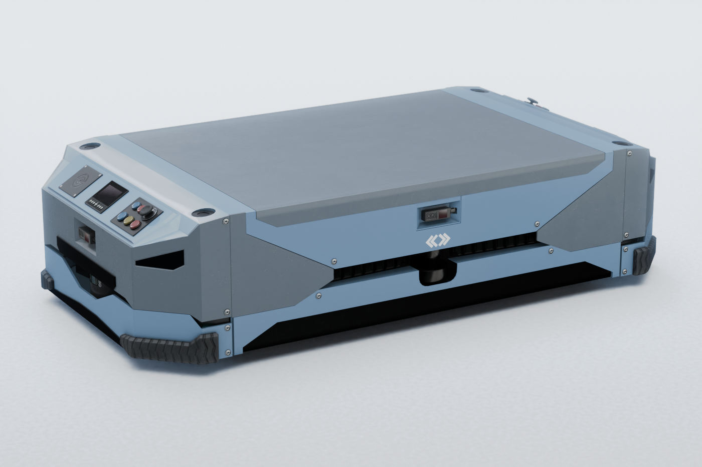

Mechanical Integration
Correct camera placement is one of the most important factors for ODS detection quality. Errors in mounting — even small ones — directly degrade detection range, create blind spots, and introduce false positives that cannot be corrected in software.
Clearance areas
Clearance area — a volume in front of the lens that must remain completely free of any permanent obstruction, including the vehicle’s own chassis, protective covers, or brackets.
Objects inside the clearance area cause stray light reflections and lens flare that reduce detection range and create persistent false positives in the occupancy grid.
Warning
Do not mount cameras behind protective panels or skins. Even translucent materials inside the clearance area will degrade performance significantly.
The following three examples compare mounting positions and obstructions. The shaded volume represents the clearance area, not the optical field of view.
Chassis lip

Mounting the camera at the chassis edge keeps the lip out of the clearance area.
Recessed opening

Recessing the camera can place the floor and sides of the opening inside the clearance area.
Overhanging load

The shorter load leaves the clearance area free; the longer load obstructs it above the camera.
Warning
Pay particular attention to parts of the vehicle that could obstruct the clearance area in corners, or further away than the robot shell itself.
Bracket design rules
Use an aluminum mounting bracket that provides continuous metal-to-metal contact with at least two long faces of the O3C housing. The recommended heat-sink dimensions for O3C are 165 × 140 × 2.5 mm. The bracket should be at least 2.5 mm thick.
Design the bracket to minimize resonant vibration. Loose brackets or long unsupported cable runs near connectors cause premature wear and image instability.
Use insulating bushings ifm E3R200 where the bracket contacts the vehicle chassis to prevent ground loops.
Temperature protection
For O3C camera, temperature protection stops and restarts camera head illumination under the following conditions.
Condition |
Temperature |
Precondition |
System reaction |
|---|---|---|---|
Overtemperature |
> +81 °C |
Normal operation |
Report a diagnostic error and stop illumination. |
Recovery from overtemperature |
≤ +72 °C |
Overtemperature error state |
Reset the error and restart illumination. |
Undertemperature |
≤ −14 °C |
Normal operation |
Report a diagnostic error and stop illumination. |
Recovery from undertemperature |
> −13 °C |
Undertemperature error state |
Reset the error and restart illumination. |
Cable routing
Route the M12 pigtail cables (0.2 m) away from high-current lines, motor drives, and solenoids to minimize EMC exposure.
Observe the minimum bending radius of the camera pigtail cables:
Fixed installation: 4 x cable diameter (4 x D)
Moving installation: 8 x cable diameter (8 x D)
For the 6.3 mm Ethernet cable, the minimum bending radius for fixed installation is 25.2 mm. Allow 50.4 mm of space for a complete 180-degree bend.
Do not apply strain to the pigtail connectors — use a strain relief point within the first 50–100 mm.
Design validation checklist
Use this checklist before finalizing the mechanical design:
Camera height and tilt are within the recommended range
Clearance area is unobstructed in the final assembly and at all articulation positions
Aluminum mounting bracket provides continuous contact with at least two long faces of the O3C housing; additional contact area is provided where practical, and the bracket is at least 2.5 mm thick
Bracket natural frequency does not coincide with vehicle vibration frequency
Ground loop is broken by insulating bushings
Cable routing avoids high-voltage and high-current areas
Strain relief is applied to pigtail cables
Contact ifm support for remote validation support if needed.
Mounting height
For ODS obstacle detection, mount the camera at a height between 250 mm and 700 mm from the floor. This range balances two competing factors:
Too low: Reflection artifacts from the floor increase false positives and reduce reliable range.
Too high: The camera is further from ground-level objects, reducing detection sensitivity for small obstacles.
If a camera is used only for cantilevered objects and does not need to separate small objects from the floor, it can be mounted higher and pointed upward. Make sure the vehicle frame, ego structure, and carried loads stay out of the field of view, as they can introduce stray light artifacts. If needed, refer to Overhanging loads, but note that this may reduce ODS performance.
Mounting tilt
Tilt the camera downward toward the floor. A greater angle of incidence on the floor surface increases the amount of reflected infrared light reaching the sensor, which improves distance measurement robustness and enables detection of low-reflectivity objects on the floor.
Heat dissipation
The O3C generates heat during operation. The mounting surface must provide adequate thermal contact to dissipate heat away from the device. Do not mount the O3C in an enclosed space without ventilation.
Use an aluminum mounting bracket that provides continuous metal-to-metal contact with at least two long faces of the O3C housing. Additional contact area is beneficial for heat conduction. The bracket should be at least 2 mm thick.
Multiple cameras
When using more than one O3C device on a vehicle:
Avoid large field-of-view overlaps and avoid mounting cameras so they can see each other directly.
In fleet deployments, assign unique channel values per vehicle to prevent inter-vehicle interference. See Interference mitigation.
Review the camera interference guidance before finalizing the camera layout. It explains channel-value separation, timing jitter, and validation for cameras installed on the same vehicle and across a vehicle fleet.
Dead zones
Important
Depending on the mounting position, dead zones may exist. ODS does not remember objects after they leave the field of view, so a vehicle can lose track of them in these areas.
Plan for dead zones early: cover them with additional cameras where needed, or include them in the vehicle’s braking-distance calculation.
Examples
Below are two examples of mounting positions for ODS.
The first example shows a typical AMR platform, with one camera on each side. In this example, each camera has a wide opening angle and helps minimize blind spots around the vehicle. The four cameras create 3D obstacle awareness around the vehicle.


All cameras are mounted at 30 cm above the ground plane, and are facing straight out, perpendicular to the side on which they are mounted.


The second example shows a typical fork truck with two front-mounted cameras. Due to the vehicle size, two cameras are used to reduce vertical blind spots. The lower camera is the narrow field-of-view camera, tilted down to detect small objects on the floor at longer distances. The upper camera is the wide field-of-view camera, tilted up to detect overhanging obstacles that could damage the top part of the vehicle. Both cameras are mounted at around 70 cm height.


Note
These images are intended as examples only and do not represent an actual at-scale model.
Checklist before proceeding
Clearance area in front of each camera is free of obstructions
Camera mounted at 250–700 mm height for detecting obstacles on floor.
Camera tilted to capture a sufficient portion of the floor if obstacles on floor is main objective.
Mounting surface provides thermal contact for heat dissipation
All cameras assigned distinct
channelValuesettings
For general mechanical integration requirements, see the Mechanical Integration Guide.